AVISO:
Algunas fotos proceden de Internet; si crees que deberían ser quitadas de la página, por favor, escribe un correo eléctronico.
Esta página no tiene ánimo de lucro.

Índice:
1.Instrucciones para el uso y entretenimiento (monoárbol):
1.1 Introducción .-1.2 Descripción de las características técnicas .- 1.3 Puesta en marcha del vehículo.- 1.4 Entretenimiento y conservación.- 1.5 El motor de cuatro tiempos.- 1.6 El desmo que no tuvimos.-
2. Técnica y ajuste (no incluye la 24 horas):
2.1 Reglaje de taqués .- 2.2 Puesta a punto.- 2.3 Reglaje de platinos .- 2.4 Tensión de la cadena .- 2.5 Verificación de la instalación eléctrica .- 2.6 Verificación del avance .- 2.7 Aclaraciones .-
3. Técnica y ajuste de los modelos Twin y Desmo:
3.1 Reglaje del juego entre válvulas y balancines para el modelo 500 Desmo.- 3.2 Reglaje de platinos.- 3.3 Avance del encendido.- 3.4 Puesta a punto.-
4. Circulares de la época: DESCARGAR EN PDF
4.1 Circular nº 1.- 4.2 Circular nº 2.- 4.3 Circular nº 3.- 4.4 Circular nº 4.- 4.5 Circular nº 5.- 4.6 Circular nº 10.- 4.7 Circular nº 18.-
5. Diagramas y despieces: VER TODOS
5.1 Despiece del motor 175 TS.- 5.2 Válvulas.- 5.3 Desmográfico.- 5.4 Despiece del motor 250 Deluxe.- 5.5 Árbol de levas Bialbero.- 5.6 Despiece del motor en V.- 5.7 Esquema eléctrico.- 5.8 Corte transversal del motor monoárbol.- 5.9 Foto de un raro motor monoárbol.-
6. La situación actual:
6.1 La situación actual.- 6.2 La gasolina sin plomo.- .6.3 Matricular la moto como vehículo clásico.-
7. Manuales:
7.1 Descarga del Manual de la Forza 350 (1.89 mb en formato jpg).- (Cortesía de David Peinado)
7.2 Descarga del Catálogo de recambios de la Strada 250 (1.50 mb en formato pdf).- (Cortesía de Martín y Martín ).
(PULSA AQUÍ PARA DESCARGAR ADOBE ACROBAT READER, programa necesario para visualizar archivos .pdf)
1.Instrucciones para el uso y entretenimiento.-
1.1 Introducción.-
En este apartado hablaremos de algunas de las instrucciones que incluían los manuales que Mototrans entregaba con las motocicletas. Estas instrucciones, eran en algunos casos, auténticas reparaciónes "de taller".
Después de la introducción, en el manual se explica dónde van situados los números de bastidor y motor. El número de bastidor y el número de motor son dos referencias que nos pueden dar pistas sobre el año de fabricación de nuestra moto y, sobre todo, nos pueden confirmar si el motor corresponde al modelo que poseemos (...). El número de bastidor está situado a la derecha del bastidor, al lado de la batería, en todos los modelos de los años 60 o en la pipa de la dirección (modelos de los años 70). El número de motor aparece en el cárter, al lado del punto delantero de unión del motor con el bastidor.
|
Guía de números de motor y chasis:
|
1.2 Descripción de las características técnicas.-
Después de explicarnos los kilómetros que eran necesarios hacer para el rodaje inicial de la moto, y hablar de las velocidades máximas recomendadas, el manual pasa a describir esta pequeña maravilla que es el motor monoárbol de Taglioni.
-MOTOR: Monocilíndrico 4 tiempos; cilindro inclinado 10º hacia delante respecto a la vertical; montado en cuna en el bastidor.
- cámara de explosión hemisférica.
- cilindro de aleación ligera, abundantemente "aletado" y camisa de hierro fundido.
- biela de acero especial con jaula de rodillos en la cabeza (eje cabeza biela) y casquillo en el pie (eje de cigüeñal).
- pistón convexo de aleación ligera con dos aros de compresión y dos de engrase.
- culata de aleación ligera, finamente aletada y asientos de válvula superpuestos.
-DISTRIBUCIÓN: Con válvulas en la culata, inclinadas a 80º y accionadas por un eje de levas, también en la culata. Las válvulas son de acero especial.
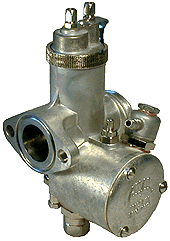
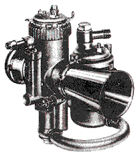
-LUBRIFICACIÓN: La lubrificación del sistema es a presión y se obtiene por medio de una bomba de engranajes accionada por el cigüeñal; esta bomba aspira el aceite a través del filtro, situado en la parte más baja del cárter motor, que sirve al tiempo como depósito de aceite, y lo distribuye canalizándolo a las partes vitales del motor. Recuperación por gravedad.
La capacidad del cárter motor es de 2 kg de aceite para todos los modelos. El nivel es correcto cuando llega a los primeros hilos de rosca del tapón de introducción. Se aconseja llenar el carter de 1.5 kg de aceite, poner el motor en marcha para que el aceite llegue a todos los sitios y posteriormente rellenar los 0.5 kg restantes.
El sistema de lubrificación es sencillo y sólo hay que vigilar en nivel de aceite (REPSOL MOTOR OIL HD 30-40 o equivalente) cada 500 kms; hacer una sustitución completa del mismo a los 2000 kms y limpiar el filtro.
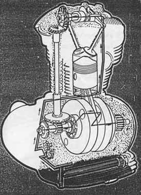
-REFRIGERACIÓN: El motor es refrigerado por aire, siendo el cilindro y la culata abundantemente "aletados" para favorecer la dispersión del calor.
-ENCENDIDO: El encendido es por distribuidor. El avance del encendido es automático.
La bujía va montada en la parte superior izquierda de la culata y los tipos recomendados son:
- Para la 125 TS, 160 TS, 200 TS, 250 Deluxe y 175 TS: NGK B8HS, Champion L-86 o Bosch W 240T1.
- Para las Sport 125, 160 y 200 Élite: NGK B7HS, Champion L-81 o Bosch W 225T1.
Es importante poner atención al montar la bujía y roscarla con la inclinación correcta. Llevar a cabo esta operación en principio tan sencilla no es tan fácil en este motor, y más de una culata está funcionando con un helicoil por esta razón.
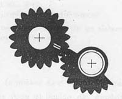
-TRANSMISIÓN: Comprende embrague y cambio. El embrague es de discos múltiples y resina fenólica, funciona en baño de aceite y va montado sobre el eje primario del cambio. El embrague es accionado por la palanca izquierda del manillar.
La transmisión entre el motor y el eje primario es por engranajes. La relación existente entre ellos en los diferentes modelos es la siguiente:
125 TS 125 S= 3.000: 1
175 TS y 200 é= 2.520: 1
-BASTIDOR: El bastidor es del tipo monotubo en acero de alta resistencia, y ofrece una línea muy elegante.
-SUSPENSIÓN:
- Delantera: Horquilla telehidráulica de gran recorrido. Cada uno de los brazos contiene 125 cc de aceite Repsol Aries ligero o Hougton Hydraulic 150 (aceites que no sé si se pueden conseguir en la actualidad, pero puede servir un aceite especial para horquillas de los que venden actualmente, de BAJA densidad).
- Trasera: Por medio de horquilla oscilante con amortiguadores hidráulicos de doble efecto. Los amortiguadores de los modelos 175 y 200 son graduables para uno o dos pasajeros.
-RUEDAS: De aluminio con perfil especial y eje desmontable la delantera. La trasera está provista de un sistema especial en la corona de arrastre, que amortigua las vibraciones bruscas de tracción. La marca es Akront.
- Neumáticos
Pirelli: el delantero rayado y el trasero esculpido.
Presión de 2.25 delante y 2.50 detrás para los modelos 175 y 200.
Presión de 1.75 delante y 2.25 detrás para los modelos 125 y 160.
-FRENOS: De expansión a doble mordaza. El delantero es accionado a mano y el posterior con el pie.
-INSTALACIÓN ELÉCTRICA: La iluminación es por batería, y ésta obtiene su recuperación por medio de un volante alternador MOTOPLAT, a través del correspondiente rectificador de corriente. La batería TUDOR tipo Acumoto -cargada en seco- (6V, 16 Ah) recargada por medio del volante magnético y a través del rectificador de corriente, alimenta, si el motor está parado, las luces de situación (ciudad y piloto). No es aconsejable circular sin batería para no estropear el rectificador de corriente. Motoplat diseño un encendido electrónico para las Ducati monocilíndricas, y así eliminar el condensador y los platinos. Todavía se puede conseguir en Barcelona. Algunas de las Ducati Mark 3 y Scrambler exportadas a USA tenían un sistema de volante magnético tradicional, sin batería ni rectificador.
Los americanos de la revista CYCLE WORD intentaron eliminar este sistema en las motos para evitar los problemas eléctricos que surgían si la batería se descargaba, acoplando un encendido electrónico STEFAN (de origen sueco) a una 250, pero al parecer daba bastantes problemas y se volvió a montar el sistema con alternador, batería y rectificador, pero ahí queda el intento. Hoy en día en España, los aficionados a la clásica utilizan un sistema que al parecer funciona -yo no lo he visto, me lo han contado- y consiste en colocar un encendido electrónico de Vespino ALX Motoplat donde va situado el alternador tradicional (que también era Motoplat), y una bobina de alta de este Vespino en vez de la bobina colocada debajo del depósito. Se prescinde del rectificador, la batería, los platinos y el condensador, aunque no sé como solucionan el problema que puede surgir al ser el encendido de una moto de 2 tiempos.
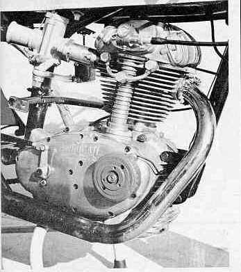
-CONSUMO Y AUTONOMÍA:
- 125 TS: 1 litro de gasolina cada 50 km a la velocidad de 75 km/h. Autonomía de 720 km.
- 125 Sport: 1 litro de gasolina cada 36 km a la velocidad de 75 km/h. Autonomía de 612 km.
- 175 TS: 1 litro de gasolina super cada 36 km a la velocidad de 75 km/h. Autonomía de 648 km.
- 200 Élite: 1 litro de gasolina cada 30 km a la velocidad de 90 km/h. Autonomía de 660 km.
-ANAGRAMAS:
Hasta 1964, los laterales del depósito en todos los modelos llevaban una calcomanía redonda con una corona de laurel en semicírculo para la primera mitad y una D para la otra mitad (VER FOTO). A partir de 1965 traen un águila, (VER FOTO) excepto la 250 DELUXE que trae desde su nacimiento esta última. La segunda versión de la 24 Horas lleva una calcomanía con letras blancas donde pone DUCATI que se utiliza también para la ROAD 250 y 350. Todos los modelos llevan en los laterales la leyenda del modelo que son. Sobre el depósito llevan un anagrama con el palmarés de las victorias en las 24 Horas de Montjuic. Los guardabarros llevan dos calcomanías pequeñas, roja o plata en el delantero, y una reflectante donde pone DUCATI en el trasero. Las modernas FORZA, STRADA, TWIN, etc. traen placas remachadas con el diseño DUCATI de los 70. VOLVER AL INICIO.
{kind=link}
-CURIOSIDADES:
Si se observa algunas de las fotos de la época, en las primeras unidades se montaba un sistema de liberación de gases internos del motor diferente al que montaron más tarde. En estas unidades este sistema era un tubo plástico que salía del motor, seguía por el chasis entrando por debajo del asiento junto al regulador y saliendo por el guardabarros trasero. Este sistema produjo un problema de óxido y corrosión en las uñas del sistema de arranque, al estar siempre abierto. Posteriormente se montó ese botón-tornillo con muelle que es una válvula de apertura y cierre para evitar ese problema, y que además sirve de tapón de llenado de aceite.
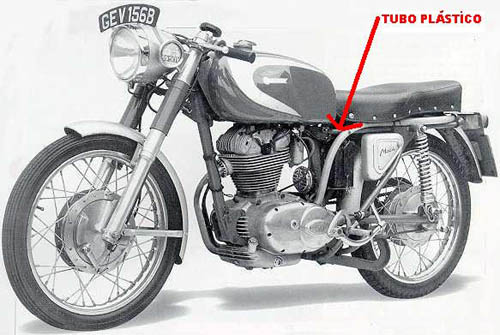
1.3 Puesta en marcha del vehículo.-
Después de abrir el grifo de gasolina y excitar el carburador, se conecta la llave de contacto que está situada en el faro, y abriendo el mando del acelerador 1/8 parte de su recorrido, se acciona la palanca de puesta en marcha. Utilizar el mando del aire es otra opción de puesta en marcha, y éste funciona al girarlo 45º en sentido opuesto a las agujas del reloj; se estrangula el paso de aire y de esta manera, sin acelerar, accionando la palanca de arranque, la moto se pone en marcha.
Las velocidades de la moto están pensadas para usar la palanca de marchas punta-tacón, de tal manera que la primera velocidad se engrana al presionar la palanca hacia abajo con el tacón . Las demás velocidades se engranan pulsando para abajo la palanca con la punta del zapato. VOLVER AL INICIO.
1.4 Entretenimiento y conservación.-
-Cada 500 Km:
- Restablecer el nivel de aceite contenido en el cárter motor.
- Verificar con un manómetro la presión de los neumáticos.
- Comprobar que los tornillos de unión entre cilindro y culata están bien apretados.
- Controlar el estado de los frenos.
- Comprobar el juego entre los balancines y las válvulas, el cual puede ser regulado mediante el tornillo y tuerca situados sobre los balancines, hasta lograr la holgura de 0.05/0.07 mm.
-Cada 1000 km:
- Comprobar que la distancia entre los electrodos de la bujía sea, aproximadamente de 0.5 mm y limpiar los mismos con un cepillo metálico empapado de gasolina.
- Limpiar con un trapito humedecido de gasolina los contactos del ruptor y verificar que la apertura de los mismos no sea superior a 0.4 mm.
- Efectuar de nuevo el reglaje de válvulas.
-Cada 2000 km:
- Sustituir el aceite que contiene el cárter motor.
- Limpiar la cubeta del carburador y los surtidores del mismo.
- Reajustar el embrague.
- Engrasar el eje de articulación de la horquilla trasera en los modelos antiguos, los modernos, a partir de 1965, no tenían engrasadores.
- Humedecer con un poco de grasa el fieltro para la lubrificación de la leva del ruptor.
- Apretar, uniformemente, las tuercas de los radios.
-Cada 20000 km:
- Desmontar el tubo de escape, la culata y el cilindro, para quitar la carbonilla que haya en la culata y sobre el pistón.
- Desmontar el cigüeñal
y limpiar los depósitos centrifugadores de aceite sacando para
ello, los tres tapones roscados de la parte de la distribución;
desmontar los discos de cierre del eje de cabeza de biela y limpiar
el interior. VOLVER AL INICIO.
1.5 El motor de cuatro tiempos.-
El motor que llevan las motocicletas Ducati es de cuatro tiempos. El pistón realiza cuatro movimientos completando un ciclo y vuelve a repetir esa acción una y otra vez. Una mezcla de aire y gasolina se inflama dentro del cilindro, y esto provoca la explosión de los gases y la expansión de los mismos empuja el pistón que hace mover el cigüeñal.
Con el sistema de Biela-Cigüeñal se asegura que una vuelta de cigüeñal corresponde a un ciclo completo del pistón (subida y bajada)
- A Cilindro
- B Pistón
- C Biela
- D Cigüeñal
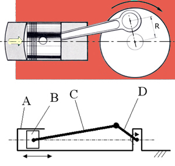
ADMISIÓN: En el primer tiempo, se abre la válvula de admisión, el pistón baja y entra en el cilindro la mezcla de combustible y aire.
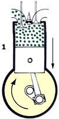
COMPRESIÓN: En el segundo tiempo, la válvula de admisión se cierra, el pistón sube hacia la cabeza del cilindro y la mezcla se comprime, al estar las dos válvulas cerradas.
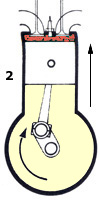
EXPLOSIÓN: En el tercer tiempo, cuando se alcanza el mínimo volumen entre el pistón y la culata, se produce una chispa eléctrica en la bujía que inflama el combustible y empuja el pistón hacia abajo, moviendo el cigüeñal que produce la energía que impulsa el motor.
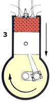
ESCAPE: En el tiempo de escape, la válvula de escape se abre, el pistón sube y los gases son expulsados del cilindro; al terminar este ciclo, el motor empieza otro nuevo igual al anterior.VOLVER AL INICIO.
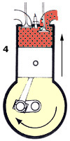
Como todos los que tenemos Mototrans-Ducati monocilíndricas de la época sabemos, nuestros modelos no tenían la distribución desmodrómica. El motivo, quizás el de siempre, un problema de dinero impidió desarrollar el motor monocilíndrico más allá de pequeños retoques y los moldes de la culata eran del modelo con muelles de retroceso. Eso es todo. Taglioni desarrolló el sistema para las monocilíndricas en 1958 y se incluyó en la serie poco después, por lo que la excusa de "innovación tecnológica cara" o algo así no tenía mucho sentido. Quizás a los técnicos de Mototrans no les convencía el sistema, aunque no creo que esa fuera la razón.
Hecha esta introducción, pasamos a explicar las diferencias principales con el sistema de muelles de retroceso y el funcionamiento del sistema desmodrómico.
La palabra desmodrómico proviene de dos raíces griegas desmos (unido) y dromos (carrera, pista). Este sistema de control de las válvulas indica que la apertura y el cierre de las mismas está operado mecánicamente, es decir que la válvula se abre con un balancín movido por la leva de apertura del árbol de levas, y se cierra con otro balancín movido por la leva de cierre del árbol de levas. En el sistema de muelles de retroceso, la válvula es abierta por el balancín, pero se cierra mediante la acción de un muelle, estando aquí la diferencia principal.
Más información sobre el sistema Desmodrómico: aquí (en inglés, pero muy interesante)
¿Qué consiguió Taglioni al aplicar el sistema desmodrómico en las motocicletas?
Dos ventajas en el funcionamiento:
-
Evitar una pesada carga de apertura del muelle, que significaba un mayor trabajo del motor y una pérdida de potencia, al tener que vencer la resistencia que éste hacía cada vez que se abría la válvula. El sistema desmo permite al motor funcionar a mayores revoluciones
-
Evitar el rebote de los muelles a altas revoluciones del motor, que se producía al no ser capaces los muelles de hacer su trabajo de cerrar las válvulas, pues volvían a abrirse antes de cerrarse, rompiendo en ocasiones las válvulas al chocar con la cabeza del pistón.
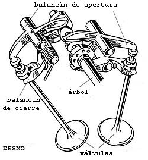
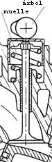
Ir
a la página técnica segunda
parte